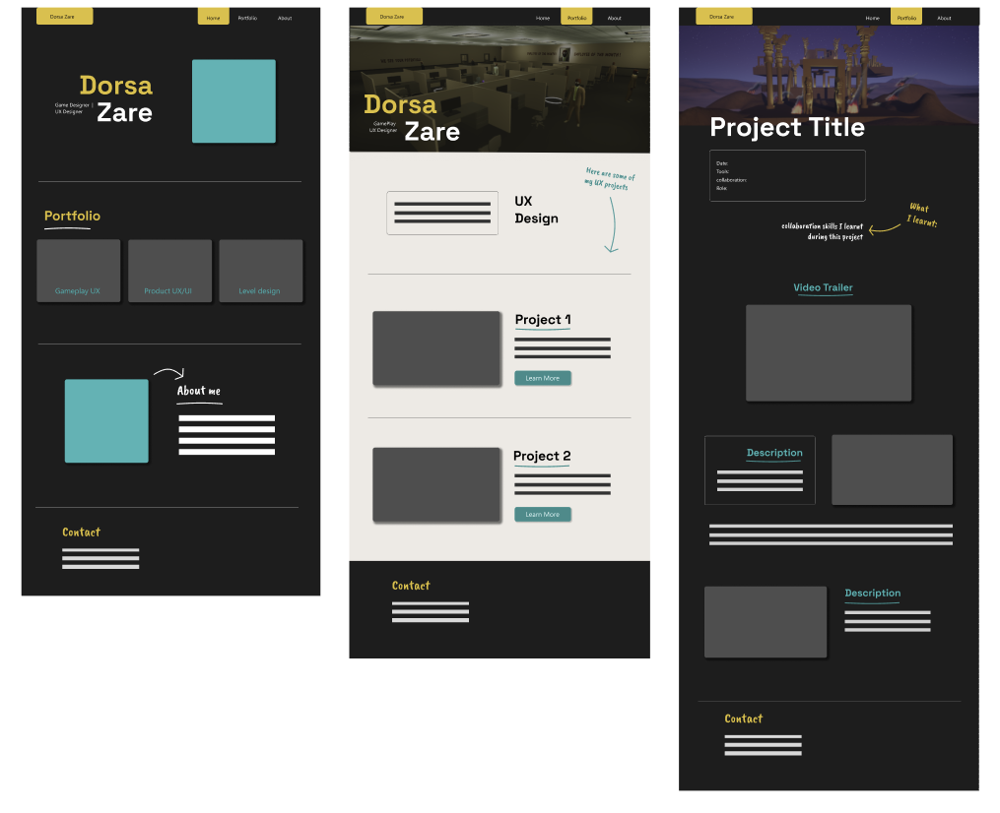

Clarity Through Simplicity
I try to remove unnecessary visual noise and focus on what actually matters in the interface. Clear hierarchy, readable typography, and balanced spacing help users quickly understand what they are looking at.
Visual Language / Personal Archive
Version 1.0
Design System
The visual foundation of my portfolio
A design system for UX, game design, and interactive media that balances structure, clarity, and subtle cultural references without losing warmth or personality.
01 / Introduction
Learn about me and what I do and why I created this design system.
This design system reflects how I approach design across my work in UX/UI, game design, and interactive media. I wanted to build a visual language that feels clear, structured, and modern, but also subtly connected to my background and personal experiences.
Growing up in Iran and later moving to Canada has shaped how I see design and visual culture. Persian design traditions often use rich colors, rhythm, and balance, while contemporary digital interfaces emphasize simplicity and clarity.
Rather than using literal cultural patterns or ornamentation, I chose colors that quietly reference Persian visual culture, like turquoise and saffron. These colors appear often in Iranian architecture, ceramics, and textiles.
My goal was to create a system that feels simple, calm, and intentional, where layout, spacing, and typography guide the experience while color adds a subtle sense of identity.
02 / Principles
I try to remove unnecessary visual noise and focus on what actually matters in the interface. Clear hierarchy, readable typography, and balanced spacing help users quickly understand what they are looking at.
Structure is important in my design process. I rely on grids, spacing systems, and alignment to create a sense of order and visual rhythm.
Color is used carefully and intentionally in this system. Turquoise acts as the main accent in the interface, while saffron appears more subtly as a secondary highlight.
Instead of directly using Persian patterns or motifs, I chose colors that reference cultural materials like tiles, ceramics, and traditional architecture.
03 / Foundations
The palette combines neutral tones for clarity and readability with accent colors inspired by Persian visual culture.
this is where I let the cultural references come through softly
03 / Foundations
The typography combines a clean modern sans serif with a more handwritten expressive style. I wanted the type system to feel minimal and readable, but still leave room for personality and imperfection in the way key moments are presented.
fonts that combine the modern minimal side of my style with a more personal imperfect side
Space Grotesk in action
Caveat in action
Segoe UI in action
The quick brown fox
The quick brown fox jumps
The quick brown fox jumps over
The quick brown fox jumps over the lazy dog
03 / Foundations
Home
Search
Settings
Arrow
Arrow Up
03 / Foundations
spacing does a lot of the quiet work here
03 / Foundations
03 / Foundations
03 / Foundations
Cards, containers
Popovers, dropdowns
Important information
03 / Foundations
1:1
4:3
16:9
04 / Components
04 / Components
04 / Components
04 / Components
Base card using light elevation for flat, stable surfaces.
Learn moreUses layered shadow for default floating content.
Learn moreRaises on hover for clear interaction depth.
Click to action05 / Application
View the original Figma wireframe:
View Figma
I wireframed these in Figma to create a low-fidelity prototype of my portfolio layout. I also started adding the colors and visual style I wanted to use.
05 / Application